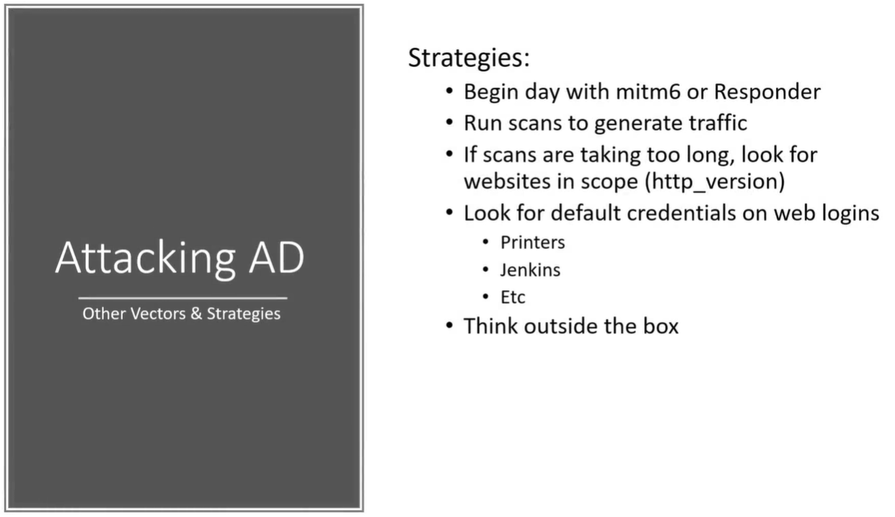

Now we know the attacks how do we piece it together and my thoughts are that we begin the day with man in the middle 6 or responder as we want traffic to be
generated we need those users coming in
So 8:00 am is a good time when users are starting to come in or even after lunch
when they're starting to log back in.
If our scans are taking too long if you have a big network which it can happen so we have to look for websites that are in scope.
We're trying to be quiet as opposed to just like running scans if our goal is to be quiet in the network.
For that will use a module called http_version which we can search in metasploit
and will see if anything responds to http version when i send out an Http request from my computer.
And it's less likely to get picked up Cuz we are making traffic on 80 and 443 which is very common.